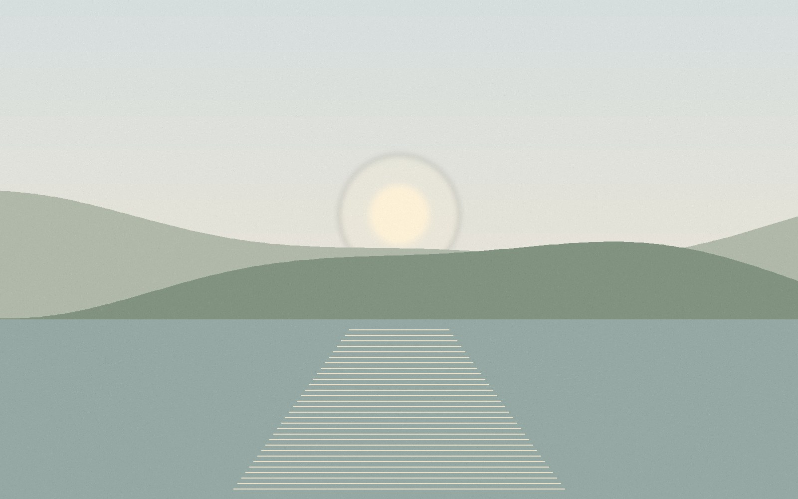
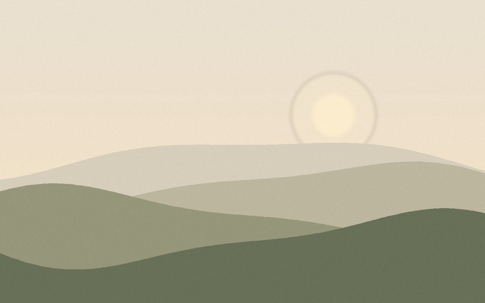
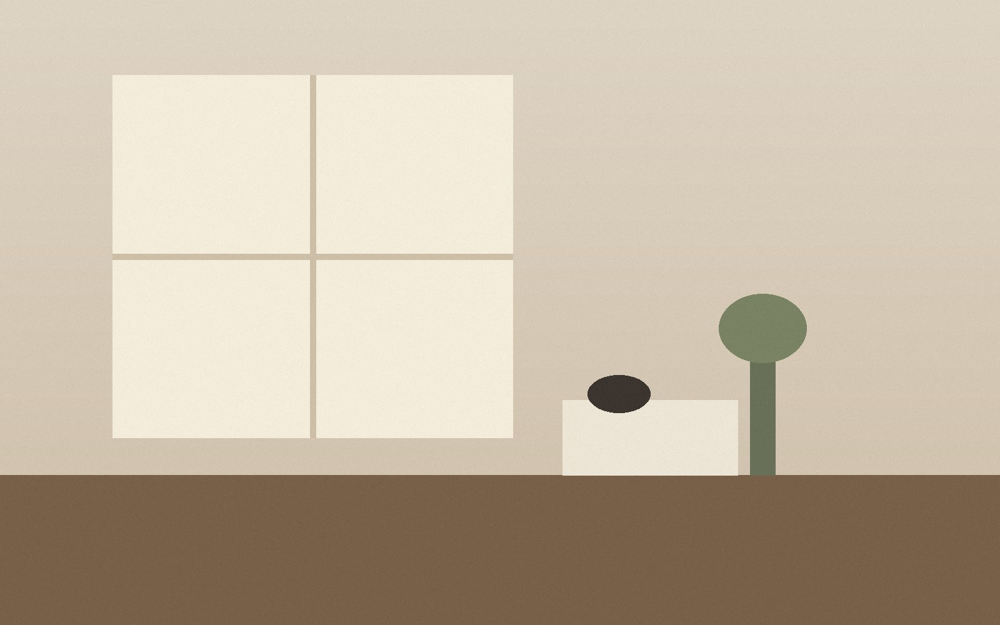
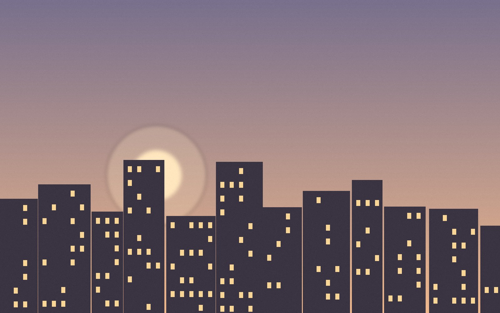
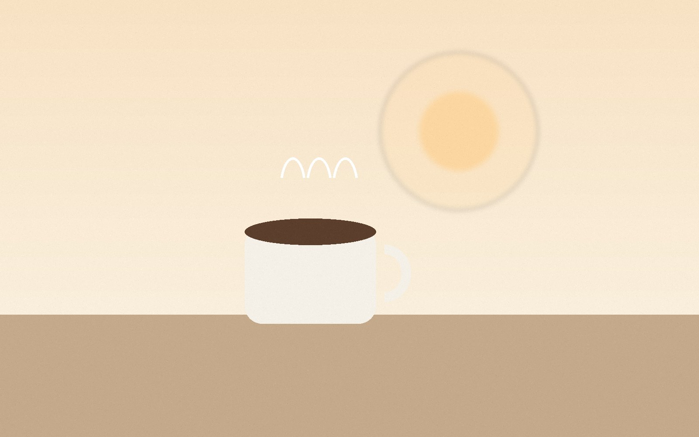

The Art of Slow Living
Why doing less, and noticing more, might be the most creative decision you make this year.
Read MoreThe Daily Journal is a quiet corner of the internet for stories about mindful living, everyday inspiration and simple creative habits.
Explore the Blog

This blog is a personal notebook made public. Here you will find thoughtful essays on living at a gentler pace, finding ideas in ordinary days and building small routines that support creative work.
Come for a short read with your morning coffee. Leave with one idea you can try today.
The Daily Journal is a creative space curated by Unsha Sattar, based in Karachi, Pakistan, sharing inspiration, creativity, and everyday stories.
Three stories to start with.

Why doing less, and noticing more, might be the most creative decision you make this year.
Read More
A walk, a window, a stranger's laugh: small moments are full of ideas if you slow down to see them.
Read More
Five gentle habits that make mornings calmer, from the first glass of water to a quiet page of writing.
Read MoreBrowse every article and find the one that fits your day.
Read the Articles